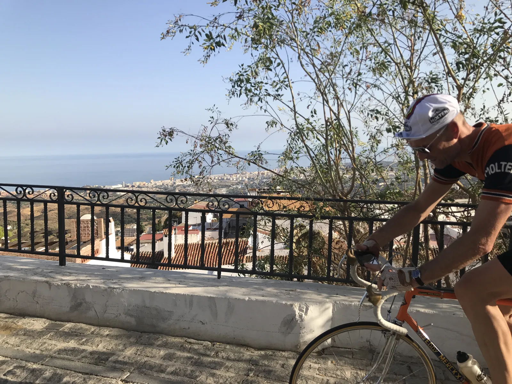
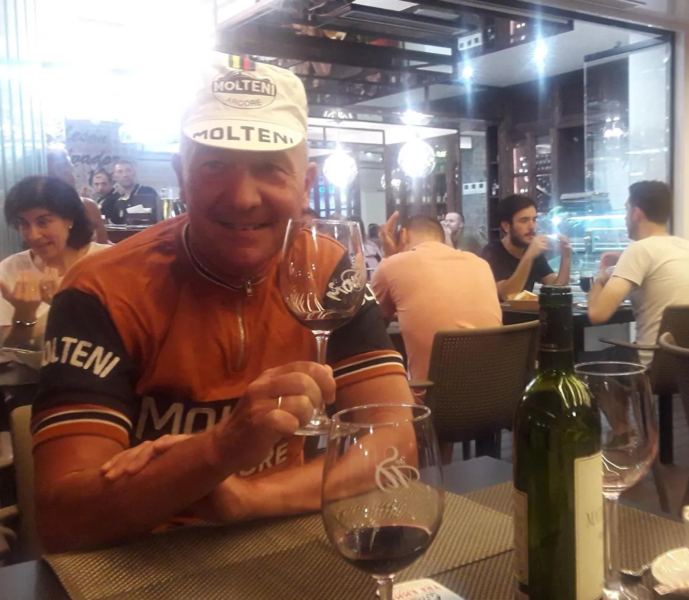

La Acero Vuelta ’17 – Prolog: Spaniere saboterer Squadra Molteni

Dagens prolog i La Acero Vuelta 17 forløb langt fra som forventet. Kaptajnen fik med nød og næppe slæbt en 3. plads i hus. Men Squadra Molteni havde nær lavet en Delgado, og det var kun i sidste øjeblik, at holdets mødte frem til starten.
Maria’s cykel kom aldrig med flyet fra Hamborg, kaptajnen blev vildledt i Malaga og ruten for prologen blev ændret i sidste øjeblik, så den viste sig at være en 5 km. lang bjergenkeltstart.
– Efter 8 timer på tværs i et Ryanair fly, er det altså svært at træde en 12. kg. tung stålcykel nogen steder hen – og da slet ikke op af et bjerg, udtaler kaptajn Niels Bjørnsteen.
Maria fik sig også en lejecykel, men det var kun med lidt lokal snilde, at det lykkedes.
– Vi kørte Costa Del Sol tynd, og havde det ikke været fordi, at Pastor Mogensen fik Directo Television Malaga til at aflyse siestaen, havde jeg nok aldrig fået en cykel, udtaler en taknemlig og lettet Maria.
Prologen
En stille og rolig fællesstart fik lidt varme i benene, før den officielle start blev antændt ved bunden af stigningen. 5 km. op til Mijas Pueblo.
Mens Kasper og Maria bakkede af for Pastor Mogensen, strøg Niels afsted med frontgruppen. De tunge gear spillede, og rytmen var god.
Ved skiltet med 500 meter til mål satte Niels sit angreb ind, men det viste sig selvfølgelig at den Spanske Armada havde saboteret skiltet, og der var egentlig 1500 meter igen. Det blev til en ny uofficiel verdensrekord i bjergspurt.
– Efter en 1500 meter lang spurt, måtte jeg nøjes med en tredjeplads. Det er selvfølgelig ikke tilfredsstillende, men der er langt endnu. La Acero Vuelta 17 er kun lige startet, udtaler Niels.

Afrulning og aftenhygge
Mijas Pueblo er en fantastisk charmerende by. Her blev der rullet af, og nydt udsigten. Kaptajnen og løjtnanten evaluerede dagens strabadser, og havde nær torpederet en lille andalusisk pige.
Som et lille plaster på såret, tog Niels spurtpointene ved skiltespurten i Torremuelle, og kører derfor i morgen i pointtrøjen.
Pastoren og pastorinden inviterede på aftenmåltid i Fuengirola, hvor dagens strabadser blev skyllet ned med lidt for lys øl, og fyldig rødvin. Samtidig benyttede Squadra Molteni lejligheden til at overrække Pastoren en ordentlig cykeltrøje. I uld!

I morgen gælder det første rigtige bjergetape. Taktikken er klar: Squadra Molteni stikke i højre venstre.
Stillingen efter prologen i La Acero Vuelta 17:
1. Miguel og Miguel, Spanien
2. Luigi og Guido, Itailien
3. Bjørnsteen og Sørensen, Squadra Molteni
4. …